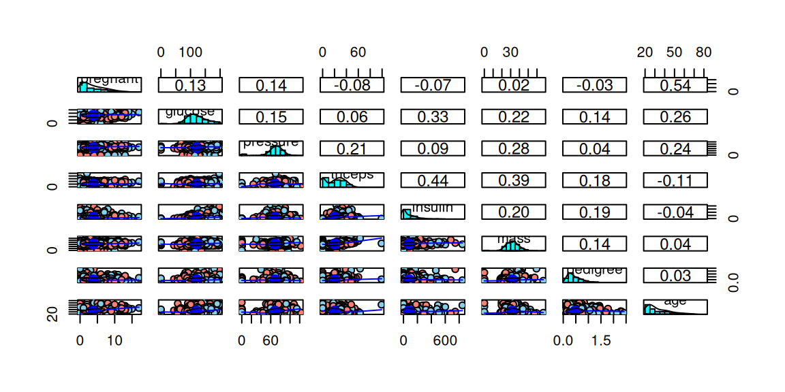
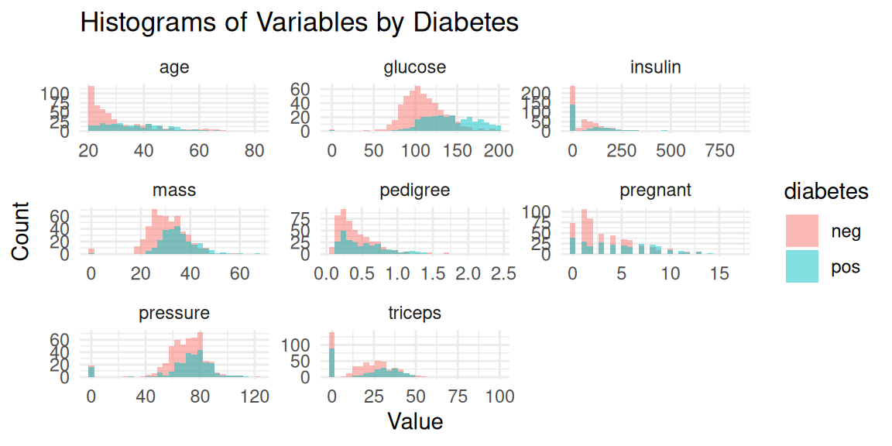

library(mlbench)
data(PimaIndiansDiabetes)
df <- PimaIndiansDiabetes
tar.idx <- 9ranger
パッケージの概要
機械学習におけるランダムフォレストモデルを構築できます。ランダムフォレストは、分類木、回帰木のアンサンブル学習による予測モデルであり、分類木のアンサンブルでは確率予測の出力もサポートしています。また、生存時間解析にランダムフォレストを応用するランダムサバイバルフォレストモデルも構築可能です。
使用例：PimaIndiansDiabetesデータの分類
データの確認
PimaIndiansDiabetesデータを用いて、種々の項目からその患者が糖尿病患者であるかを判定するランダムフォレストモデルをrangerパッケージを用いて構築します。
データの中身の確認です。（head）
head(df) pregnant glucose pressure triceps insulin mass pedigree age diabetes
1 6 148 72 35 0 33.6 0.627 50 pos
2 1 85 66 29 0 26.6 0.351 31 neg
3 8 183 64 0 0 23.3 0.672 32 pos
4 1 89 66 23 94 28.1 0.167 21 neg
5 0 137 40 35 168 43.1 2.288 33 pos
6 5 116 74 0 0 25.6 0.201 30 negデータの中身の確認です。（str）
str(df)'data.frame': 768 obs. of 9 variables:
$ pregnant: num 6 1 8 1 0 5 3 10 2 8 ...
$ glucose : num 148 85 183 89 137 116 78 115 197 125 ...
$ pressure: num 72 66 64 66 40 74 50 0 70 96 ...
$ triceps : num 35 29 0 23 35 0 32 0 45 0 ...
$ insulin : num 0 0 0 94 168 0 88 0 543 0 ...
$ mass : num 33.6 26.6 23.3 28.1 43.1 25.6 31 35.3 30.5 0 ...
$ pedigree: num 0.627 0.351 0.672 0.167 2.288 ...
$ age : num 50 31 32 21 33 30 26 29 53 54 ...
$ diabetes: Factor w/ 2 levels "neg","pos": 2 1 2 1 2 1 2 1 2 2 ...各変数の意味は以下の通りです。
| 変数名 | データ型 | 概要 |
|---|---|---|
| pregnant | num | 妊娠回数 |
| glucose | num | 血漿グルコース濃度（負荷試験） |
| pressure | num | 拡張期血圧 [mm Hg] |
| triceps | num | 上腕三頭筋皮膚襞の厚さ [mm ] |
| insulin | num | 2時間血清インスリン [mu U/ml] |
| mass | num | BMI |
| pedigree | num | 糖尿病血統機能 |
| age | num | 年齢 |
| diabetes | Factor | クラス変数（糖尿病の検査） |
summaryを表示します。
summary(df) pregnant glucose pressure triceps
Min. : 0.000 Min. : 0.0 Min. : 0.00 Min. : 0.00
1st Qu.: 1.000 1st Qu.: 99.0 1st Qu.: 62.00 1st Qu.: 0.00
Median : 3.000 Median :117.0 Median : 72.00 Median :23.00
Mean : 3.845 Mean :120.9 Mean : 69.11 Mean :20.54
3rd Qu.: 6.000 3rd Qu.:140.2 3rd Qu.: 80.00 3rd Qu.:32.00
Max. :17.000 Max. :199.0 Max. :122.00 Max. :99.00
insulin mass pedigree age diabetes
Min. : 0.0 Min. : 0.00 Min. :0.0780 Min. :21.00 neg:500
1st Qu.: 0.0 1st Qu.:27.30 1st Qu.:0.2437 1st Qu.:24.00 pos:268
Median : 30.5 Median :32.00 Median :0.3725 Median :29.00
Mean : 79.8 Mean :31.99 Mean :0.4719 Mean :33.24
3rd Qu.:127.2 3rd Qu.:36.60 3rd Qu.:0.6262 3rd Qu.:41.00
Max. :846.0 Max. :67.10 Max. :2.4200 Max. :81.00 psychパッケージのpairs.panelsを用いて、散布図の一覧を表示します。
library(psych)df.x <- df[-tar.idx]
df.y <- df[tar.idx]
df.y <- ifelse(df.y == "pos", 1, 2)
pairs.panels(df.x, bg=c("skyblue", "salmon")[df.y], pch=21)
ggplot2パッケージを用いて、ヒストグラムを表示します。変数ごとにpos/negの分布の傾向を把握することができます。
library(ggplot2)
Attaching package: 'ggplot2'The following objects are masked from 'package:psych':
%+%, alphalibrary(tidyr)
library(dplyr)
Attaching package: 'dplyr'The following objects are masked from 'package:stats':
filter, lagThe following objects are masked from 'package:base':
intersect, setdiff, setequal, union# 数値変数だけを抽出（diabetes以外）
num_vars <- names(df)[sapply(df, is.numeric)]
# 長い形式に変換
df_long <- df %>%
pivot_longer(cols = all_of(num_vars), names_to = "variable", values_to = "value")
# ヒストグラムを1つの図にまとめて作成
ggplot(df_long, aes(x = value, fill = diabetes)) +
geom_histogram(position = "identity", alpha = 0.5, bins = 30) +
facet_wrap(~variable, scales = "free") +
labs(title = "Histograms of Variables by Diabetes",
x = "Value", y = "Count") +
theme_minimal()
変数の重要度
まずは全てのデータを使ってランダムフォレストモデルを構築してみます。
library(ranger)
# シードを設定
set.seed(123)
(model.all <- ranger(diabetes ~ ., data = df, importance = "impurity"))Ranger result
Call:
ranger(diabetes ~ ., data = df, importance = "impurity")
Type: Classification
Number of trees: 500
Sample size: 768
Number of independent variables: 8
Mtry: 2
Target node size: 1
Variable importance mode: impurity
Splitrule: gini
OOB prediction error: 23.57 % importance = “impurity”と設定することにより、結果にvariable.importanceを保持してくれます。この中身を確認することにより各変数の重要度を確認することが出来ます。
data.frameの出力整形用の関数を定義します。
library(knitr)
library(kableExtra)
Attaching package: 'kableExtra'The following object is masked from 'package:dplyr':
group_rowsshow_df <- function(df, cap=""){
if(is_html_output()){
kable(df, format = "html", caption = cap) %>%
kable_styling(bootstrap_options = "striped", full_width = FALSE, position = "left")
}else{
kable(df, format = "pipe", caption = cap)
}
}各変数の重要度を確認します。PimaIndiansDiabetesデータの分類には特にglucose（血漿グルコース濃度）・mass（BMI）の情報が重要であることが分かります。
show_df(model.all$variable.importance, "重要度")| x | |
|---|---|
| pregnant | 28.29910 |
| glucose | 91.24400 |
| pressure | 31.46569 |
| triceps | 23.61451 |
| insulin | 24.66480 |
| mass | 56.31825 |
| pedigree | 43.11163 |
| age | 47.13476 |
データセットの準備
PimaIndiansDiabetesデータを、モデル生成のための訓練データとモデル評価のためのテストデータに分割します。データ割合は、訓練データ7割・テストデータ3割とします。確認のためにデータサイズを出力します。
# 再現性のためにシードを設定
set.seed(123)
# データの分割
sample_indices <- sample(1:nrow(df), 0.7 * nrow(df))
train_data <- df[sample_indices, ]
test_data <- df[-sample_indices, ]
# データサイズの確認
c(nrow(df), nrow(train_data), nrow(test_data))[1] 768 537 231モデルの生成・予測の実行
訓練データを用いてランダムフォレストモデルを生成します。モデルの生成結果は以下の通りです。
set.seed(123)
(model <- ranger(diabetes ~ ., data = train_data))Ranger result
Call:
ranger(diabetes ~ ., data = train_data)
Type: Classification
Number of trees: 500
Sample size: 537
Number of independent variables: 8
Mtry: 2
Target node size: 1
Variable importance mode: none
Splitrule: gini
OOB prediction error: 24.39 % テストデータを用いてモデルの評価をします。まずは、テストデータを先ほど構築したランダムフォレストモデルに適用させ、その予測結果をpredictionsに格納します。
res_pred <- predict(model, data = test_data)$predictions実際の結果と予測結果を比較できる混同行列を出力します。
res_act <- test_data[[tar.idx]]
(conf_mat <- table(res_act, res_pred)) res_pred
res_act neg pos
neg 128 22
pos 35 46各種評価指標を確認します。まずは計算用の関数を定義します。
create_df_res <- function(cmat){
TN <- cmat[1,1]
FP <- cmat[1,2]
FN <- cmat[2,1]
TP <- cmat[2,2]
# 正解率：どれだけ正しく分類できたかの割合
acc <- round((TP + TN) / (TP + TN + FN + FP), 3)
# 適合率：陽性と判定されたものがどれだけ正しく陽性であるかの割合
prec <- round(TP / (TP + FP), 3)
# 再現率（真陽性率）：実際に陽性のものをどれだけ正しく陽性と判定できたかの割合
rec <- round(TP / (TP + FN), 3)
# F値：適合率と再現率の調和平均（両者はトレードオフの関係）
Fval <- round(2 * rec * prec / (rec + prec), 3)
# 真陰性率：実際に陰性のものをどれだけ正しく陰性と判定できたかの割合
TNRat <- round(TN / (TN + FP), 3)
df_rat <- data.frame(
Item = c("正解率", "適合率", "再現率（真陽性率）", "F値", "真陰性率"),
Rate = c(acc, prec, rec, Fval, TNRat)
)
df_rat
}評価指標を確認します。
df_res <- create_df_res (conf_mat)
show_df(df_res)| Item | Rate |
|---|---|
| 正解率 | 0.753 |
| 適合率 | 0.676 |
| 再現率（真陽性率） | 0.568 |
| F値 | 0.617 |
| 真陰性率 | 0.853 |
ハイパーパラメーターのチューニング
rangerのランダムフォレストモデルにおける主なハイパーパラメーターは以下の通りです。
- 決定木を生成する際に使用するパラメータの数(mtry)
- 1ノードあたりの最小データ数(min.node.size)
- 生成する決定木の数(num.trees)
これらのハイパーパラメーターの最適な設定を探す作業がハイパーパラメーターのチューニングとなります。rangerのハイパーパラメーターのチューニング用にはtuneRanger等のパッケージがありますが、ここではmtryとmin.node.sizeをそれぞれ動かして精度比較をしてみます（グリッドサーチ）。
なお、rangerのランダムフォレストモデルではOOBError(Out-Of-bag Error)が算出されます。これはモデル構築時に一部データを学習に使用しない代わりにモデル検証に使用して誤差率を求めています。そのため、クロスバリデーションをしなくても、ある程度の汎化性能を測ることができます。
先に、重要度の高い変数に絞ったモデルを試してみます。OOBErrorはわずかに増加していますので、変数を全て使ったモデルが良さそうです。
set.seed(123)
(model4 <- ranger(diabetes ~ glucose + mass + pedigree + age, data = train_data))Ranger result
Call:
ranger(diabetes ~ glucose + mass + pedigree + age, data = train_data)
Type: Classification
Number of trees: 500
Sample size: 537
Number of independent variables: 4
Mtry: 2
Target node size: 1
Variable importance mode: none
Splitrule: gini
OOB prediction error: 24.95 % チューニング候補値です。expand.gridを作って全ての組み合わせを列挙します。
param_grid <- expand.grid(
mtry = c(1, 2, 3, 4),
min.node.size = c(1, 3, 5, 10)
)
show_df(param_grid)| mtry | min.node.size |
|---|---|
| 1 | 1 |
| 2 | 1 |
| 3 | 1 |
| 4 | 1 |
| 1 | 3 |
| 2 | 3 |
| 3 | 3 |
| 4 | 3 |
| 1 | 5 |
| 2 | 5 |
| 3 | 5 |
| 4 | 5 |
| 1 | 10 |
| 2 | 10 |
| 3 | 10 |
| 4 | 10 |
各パラメータでモデル精度を検証してゆきます。
#結果保存用
results <- data.frame(
mtry = integer(),
min.node.size = integer(),
oob.error = numeric()
)
for (i in 1:nrow(param_grid)) {
params <- param_grid[i, ]
model <- ranger(
formula = diabetes ~ .,
data = train_data,
mtry = params$mtry,
min.node.size = params$min.node.size,
seed = 123,
oob.error = TRUE
)
results <- rbind(results, data.frame(
mtry = params$mtry,
min.node.size = params$min.node.size,
oob.error = model$prediction.error
))
}
show_df(results)| mtry | min.node.size | oob.error |
|---|---|---|
| 1 | 1 | 0.2327747 |
| 2 | 1 | 0.2495345 |
| 3 | 1 | 0.2439479 |
| 4 | 1 | 0.2532588 |
| 1 | 3 | 0.2253259 |
| 2 | 3 | 0.2476723 |
| 3 | 3 | 0.2495345 |
| 4 | 3 | 0.2402235 |
| 1 | 5 | 0.2420857 |
| 2 | 5 | 0.2439479 |
| 3 | 5 | 0.2495345 |
| 4 | 5 | 0.2495345 |
| 1 | 10 | 0.2253259 |
| 2 | 10 | 0.2476723 |
| 3 | 10 | 0.2383613 |
| 4 | 10 | 0.2495345 |
OOBErrorがもっとも小さいパラメータを確認します。
best <- results[which.min(results$oob.error), ]
show_df(best, "最良のパラメータ")| mtry | min.node.size | oob.error | |
|---|---|---|---|
| 5 | 1 | 3 | 0.2253259 |
チューニングされたパラメータを使用してモデル構築します。訓練時よりもOOBErrorが上昇しています。過学習している可能性があるため、クロスバリデーションを実装する必要があるかもしれません。
set.seed(123)
(model.tuned <- ranger(
diabetes ~ .,
data = train_data,
mtry = best$mtry,
min.node.size = best$min.node.size))Ranger result
Call:
ranger(diabetes ~ ., data = train_data, mtry = best$mtry, min.node.size = best$min.node.size)
Type: Classification
Number of trees: 500
Sample size: 537
Number of independent variables: 8
Mtry: 1
Target node size: 3
Variable importance mode: none
Splitrule: gini
OOB prediction error: 23.65 % 混同行列と評価指標を計算します。
res_pred.tuned <- predict(model.tuned, data = test_data)$predictions
(conf_mat.tuned <- table(res_act, res_pred.tuned)) res_pred.tuned
res_act neg pos
neg 127 23
pos 40 41最初に作ったモデルと比較しますが、過学習の影響か少し性能が落ちてしまっているようです。
df_res.tuned <- create_df_res (conf_mat.tuned)
df_res.all <- cbind(
df_res,
df_res.tuned[, 2])
colnames(df_res.all) <- c("Item", "df_res", "df_res.tuned")
show_df(df_res.all)| Item | df_res | df_res.tuned |
|---|---|---|
| 正解率 | 0.753 | 0.727 |
| 適合率 | 0.676 | 0.641 |
| 再現率（真陽性率） | 0.568 | 0.506 |
| F値 | 0.617 | 0.566 |
| 真陰性率 | 0.853 | 0.847 |